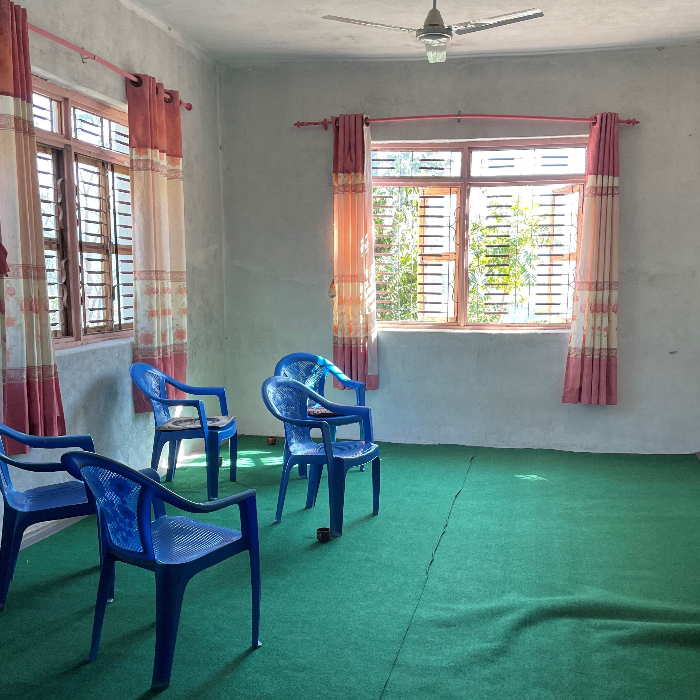

Research

I do data science for data scarce applications. My research develops new methods for causal inference in panel and time series settings, combining Bayesian machine learning, micro-level data, and large language models to answer questions that conventional approaches cannot. I apply these methods to understanding how international organizations build state capacity in fragile states, where administrative and remote-sensing data are often sparse, noisy, or incomplete. Rather than treating imperfect data as a limitation, I treat it as the methodological problem worth solving, drawing on computational social science, fieldwork, and formal theory to recover credible causal evidence from difficult observational settings.
Publications
A Multi-Task Gaussian Process Model for Inferring Time-Varying Treatment Effects in Panel Data
(with Yehu Chen, Jacob Montgomery, and Roman Garnett)
|
Working Papers
Building State Capacity Locally: International Interventions, Delegation, and Local Governance in Fragile States (Job Market Paper)
|
A Gaussian Process Framework for Structured, Flexible, and Interpretable Machine-Learning Models (with Yehu Chen, Jacob Montgomery, and Roman Garnett)
|
Why not both? Combining human and LLM labels in event data
|
Beyond Peacekeeping: The United Nations Development Programme, Peacebuilding, and Violence Mitigation (Awarded Best Poster from APSA at the 2023 conference; Revise and Resubmit)
|
Border Fortification and Trust in Political Institutions (with David Carter, Beth Simmons, and Michael Kenwick) (Under review)
|
| Violence Dynamics in Israel-Palestine: Introducing the Palestinian-Israeli Interactions & Microhostilities (PA'ILIM) Dataset (with Carly N. Wayne and Abbie Eastman) (Under review) |
Works in Progress
- Hierarchical Partial Pooling and Difference-in-Differences (for the 2026 American Political Science Association Annual Meeting)
- United Nations Development Programme Complete Project Dataset
- Lights Out: The USAID Shutdown as a Natural Experiment in Nighttime Light Validity